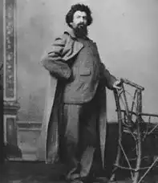

LARTISTE
LARTISTE
LARTISTE
LARTISTE
Giovanni Segantini (né à Arco sur le lac de Garde le 15 janvier 1858 - mort dans le Schafberg Pontresina le 28 septembre 1899) est un peintre italien rattaché au courant du symbolisme.
C'est un peintre de genre, qui a représenté des sujets typiques, dont des paysages de montagnes.
Pour Philippe Dagen du journal Le Monde, « il s'agit d'un des artistes majeurs de son temps, entre symbolisme, postimpressionnisme et primitivisme ».
Il perd sa mère à sept ans, et son père un an plus tard puis il fréquente l'Académie des beaux-arts de Brera à Milan.
Vers 1888 Segantini pressé à Milan forte amitié avec un peintre qui avait déjà atteint une grande renommée Francesco Filippini, qui a consacré l'opéra "Impression de la lagune".